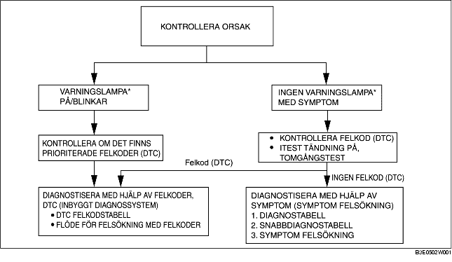

FÖRORD [FN4A-EL]
B3E050219090W02
• När kunden rapporterar ett fel på fordonet, kontrollera felindikatorlampan (MIL), AT-varningslampan och PCM-modulens minne efter felkoder (DTC). Utför sedan diagnos av felet enligt följande flödesschema.
-
- Om någon felkod (DTC) visas, utför aktuell felkodskontroll. (Se DTC-TABELL [FN4A-EL].)
-
- Om ingen felkod (DTC) finns, lyser felindikatorn (MIL) inte och AT varningslampan tänds inte. Använd lämplig symptom felsökning. (Se SYMPTOM FELSÖKNINGSTABELL.)

*: Felindikatorlampa (MIL), AT-varningslampa